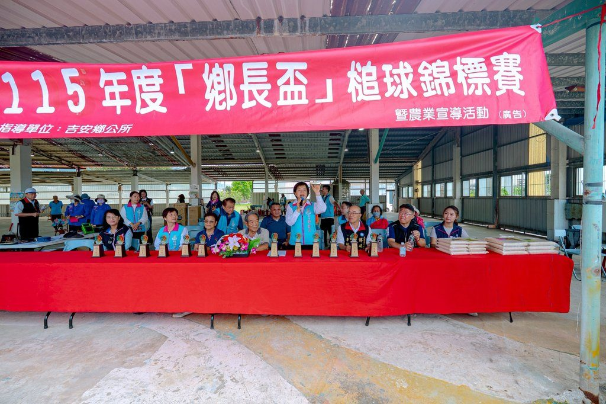

吉安鄉鬱金香公園舉辦首場跨縣市槌球賽

可樂電子報小編/編輯
六月的晨光輕灑在吉安鄉鬱金香公園，翠綠草地上逐漸聚集來自各地的槌球好手。這座完成活化轉型的公園，迎來嶄新里程碑——由吉安鄉公所、吉安鄉民代表會與吉安鄉槌球協會共同舉辦的「115年吉安鄉鄉長盃槌球錦標賽暨農業推廣活動」，吸引基隆、宜蘭、臺東及花蓮共30支隊伍、200餘位選手齊聚一堂，在好山好水間展開一場友誼與競技兼具的盛會。

球場上，選手們專注揮槌，讓彩球穿越球門、精準推進，每一次擊球都凝聚著經驗與默契；球場外，歡笑與加油聲此起彼落，不同縣市的球友彼此交流、分享心得，充分展現「以球會友」的運動精神。

經過一天熱烈賽事，六場次冠、亞軍隊伍順利出爐。冠軍隊伍分別為松柏隊、宜蘭市隊、財神隊、花電隊、玉里老人會隊及苦茶油隊；亞軍則由天龍隊、清水隊、太陽隊、老董隊、吉娜魯岸隊及托瓦本文健隊獲得。

此次參賽隊伍跨越基、宜、花、東，不僅讓鬱金香公園成為槌球交流的重要舞臺，也讓更多人認識吉安鄉優質的休閒運動環境與豐富農業特色。運動與農業在此相遇，為地方注入新的活力與可能。